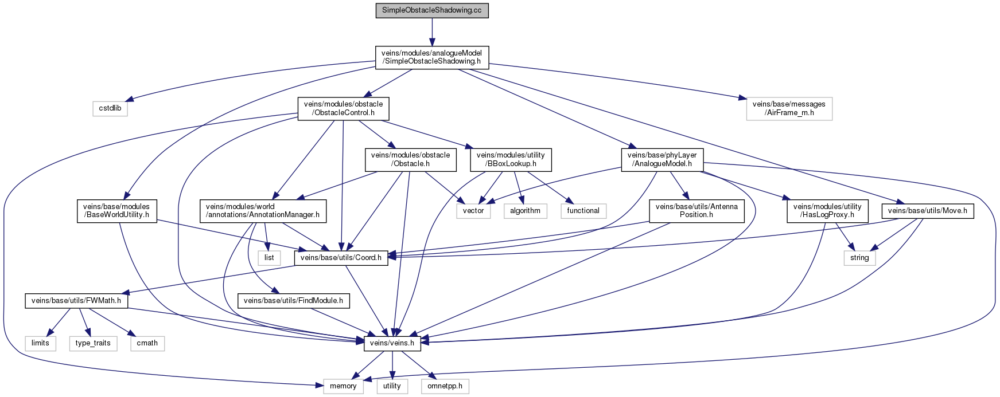

Veins
The open source vehicular network simulation framework.
SimpleObstacleShadowing.cc File Reference
#include "
veins/modules/analogueModel/SimpleObstacleShadowing.h
"
Include dependency graph for SimpleObstacleShadowing.cc:

src
veins
modules
analogueModel
SimpleObstacleShadowing.cc
Generated on Thu Nov 12 2020 22:51:45 for Veins by
1.8.13
 1.8.13 1.8.13
1.8.13 1.8.13